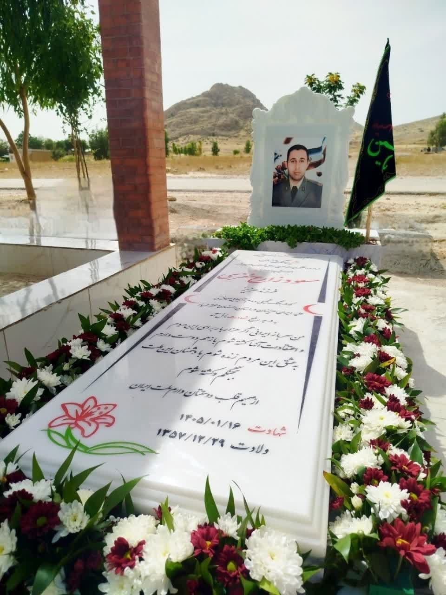

پایگاه اطلاع رسانی شهدای ارتش

شهید مسعود زارع خفری

زندگینامه شهید
29 اسفند 1357 در نورآباد ممسنی استان فارس به دنیا آمد. خرداد 1377 موفق به اخذ مدرک دیپلم شد. سپس در آزمون ورودی دانشگاه افسری امام علی (ع) شرکت کرد و به جمع دانشجویان این دانشگاه پیوست.
اسفند ۱۳۸۰ به اخذ دانشنامه کارشناسی و درجه ستواندومی نائل آمد. پس از آن برای گذراندن دوره مقدماتی رستهای پدافند هوایی، به مرکز آموزش توپخانه اصفهان عزیمت کرد و پس از اتمام دوره یکساله آن، به لشکر ۸۸ زرهی زاهدان اختصاص یافت و به مدت هفت سال و شش ماه بهعنوان افسر اجرائیات و فرمانده آتشبار پدافند هوایی در گردان ۳۷۹ توپخانه پدافند هوایی ۲۳ م.م این لشکر انجام وظیفه نمود.
دوره نظری دانشکده فرماندهی و ستاد را اسفند 1398 به اتمام رساند و به اخذ دانشنامه کارشناسی ارشد مدیریت دفاعی نائل آمد. وی در آذر ۱۳۸۳ مبادرت به انجام سنت نیکوی ازدواج کرد و صاحب دو فرزند دختر به نامهای «یکتا» و «آوا» شد.
دوره نظری دانشکده فرماندهی و ستاد را اسفند 1398 به اتمام رساند و به اخذ دانشنامه کارشناسی ارشد مدیریت دفاعی نائل آمد. در پرونده خدمتی شهید بیش از ۳۰۳ مورد تشویقی اعم از درج در دستور یگان و نیرو و اخذ لوح تقدیر از فرمانده وقت نیروی زمینی ارتش به چشم میخورد که ۲۴ مورد آن مربوط به کسب رتبه عالی در ارزیابیهای سالیانه است.
پس از طی دوره عالی رستهای، به گروه 99 پدافند هوایی نیروی زمینی ارتش اختصاص یافت و در مشاغل کارشناس عالی عملیات و آموزش، جانشین فرمانده گردان و فرمانده گردانهای 365 و 353 و آتشبار قرارگاه پدافند هوایی به انجام وظیفه پرداخت. پس از طی دانشکده فرماندهی و ستاد ارتش نیز به گروه ۵۵ توپخانه اصفهان منتقل و بهعنوان رئیس بازرسی گروه مشغول به انجام وظیفه شد سپس با توجه به سوابق ارزشمند وی، در سمت رئیس ستاد گروه ۹۹ پدافند هوایی منصوب شد و به ادامه خدمت پرداخت و از آبان 1401 بهعنوان فرمانده دانشکده پدافند هوایی مرکز آموزش توپخانه و موشکهای نزاجا انتصاب یافت.
وی در جنگ دوازدهروزه با مسئولیتپذیری مثالزدنی در راستای امر آموزش و همچنین فرماندهی کارکنان پدافند هوایی، خود نیز نقشی بهسزایی در جنگ ایفا نمود و با ارائه طرحهای نوین مبتنی بر جنگهای جدید، تمام تلاش خود را پیرامون تقلیل تلفات و صدمات جنگ به کار گرفت. پس از تجاوز مجدد آمریکا و رژیم صهیونیستی به میهن عزیزمان در جنگ رمضان، بهعنوان یکی از افسران پرتلاش در میدان حاضر شد و ضمن فرماندهی و مدیریت عناصر تحت امر و با ابلاغ مأموریت مقابله با هواپیماهای دشمن، شخصاً در ساعت 04:45 بامداد روز شانزدهم فروردین ۱۴۰۵ به دشت مهیار اصفهان اعزام شد و پس از سرنگونی یک فروند از هواگردهای آمریکا توسط موشک دوشپرتاب، بلافاصله مورد تهاجم هواپیماهای دشمن قرار گرفت و با اصابت موشکهای متعدد به محل استقرارش به همراه جمعی از همرزمان، در ساعت ۰۵:۴۵ بامداد همان روز به درجه رفیع شهادت نائل آمد. از نامبرده و تیم تحت امر وی، بهعنوان «ناجیان معجزه طبس ۲» یاد میشود.
پیکر پاک شهید مسعود زارع خفری پس از انتقال به زادگاه و برگزاری مراسم باشکوه تشییع، در گلزار شهدای نورآباد ممسنی به خاک سپرده شد و آرام گرفت.


خاطرات همسر شهید
سلام.
مسعود روحیه اطاعتپذیری نسبت به مافوقش را همیشه رعایت میکرد و خود را مسئول میدانست. این روحیه مسئولیتپذیریاش را وقتی متوجه شدم که با وجود چندین سال خدمت در زابل و شرایط سخت آنجا، وقتی به ایشان مأموریت ایرانشهر را هم واگذار کردند، بدون هیچگونه چونوچرایی پذیرفت و در نتیجه ما عازم ایرانشهر شدیم. وقتی که به ایرانشهر رفتیم، منزل سازمانی وجود نداشت و ما یک واحد آپارتمان در ایرانشهر اجاره کردیم. مسعود با همان سختی و جدیتی که در زابل داشت، در آنجا هم امور محوله را به نحو احسن انجام میداد. چندین ماه را در خانه اجارهای زندگی کردیم و بعد به ما یک واحد منزل مسکونی در شهرک شهید نامجوی ارتش واگذار کردند. مسعود در ایرانشهر هم شغل عملیاتی داشت و در بیشتر مواقع به منطقه میرفت. هنوز هم این روحیه خستگیناپذیریاش کم نشده بود و با اینکه شرایط آبوهوایی و امنیت ایرانشهر هم دست کمی از زابل نداشت؛ اما او هیچوقت در انجام امور کاریاش کوتاهی نمیکرد. .
